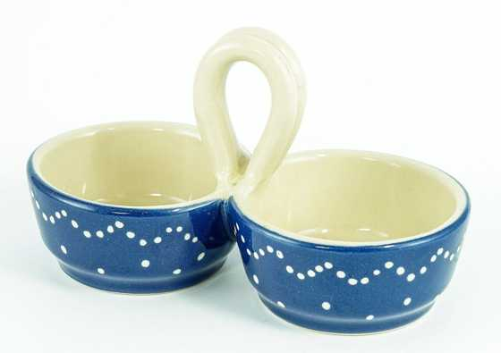
ワンプレートランチ
無農薬野菜をふんだんに使った、肉・魚を使わないランチ。詳細は準備中。
掲載している写真はフリー素材のイメージです。お店の実際の様子・器・料理ではありません。他地域で撮影されたものや撮影地が不明のものを含みます。
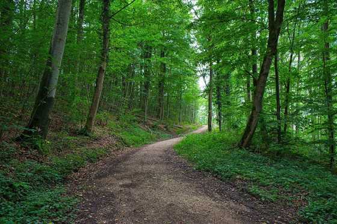
うつわカフェAoisaruは、陶芸家のご夫妻が営むカフェです。ご主人が器をつくり、奥様がカフェを切り盛りされていると、地域の紹介記事で伝えられています。カフェで使う器もご夫妻の作品で、店内のギャラリーでは器を購入できるとされています。
出典は各紹介記事(2020年2月公開・2023年更新)です。営業の最新状況はInstagramでご確認ください。
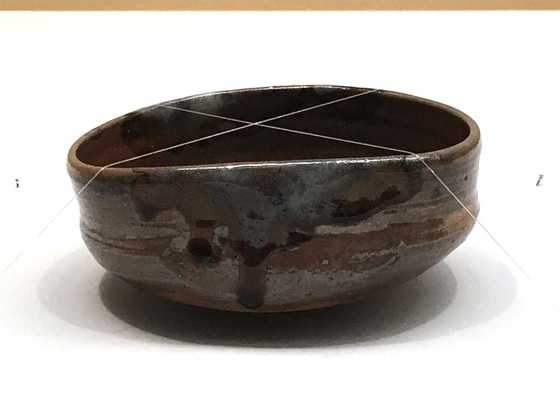
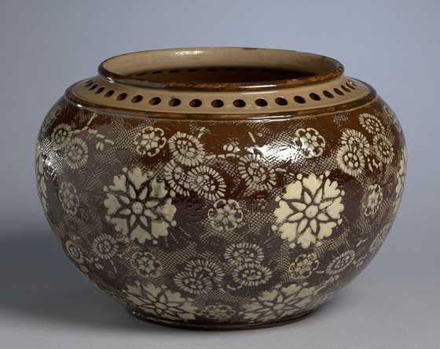
器は、料理をのせることで使いはじめられます。窓から入る光、古い家の木のぬくもり、手づくりの器。このサイトは、そんな静かな時間を思い描いた制作側のイメージです。
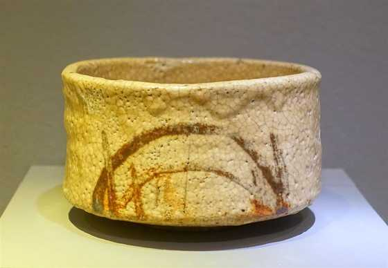
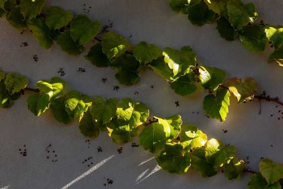
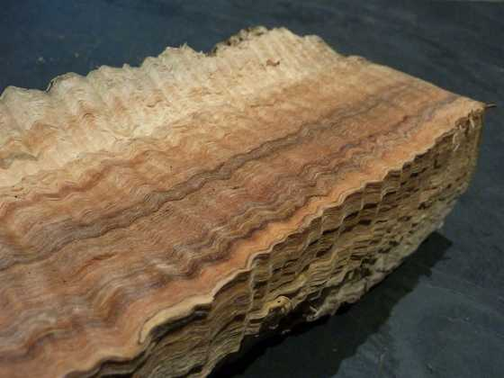
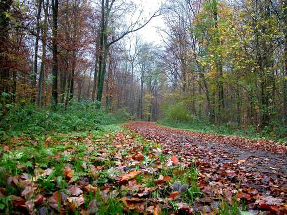
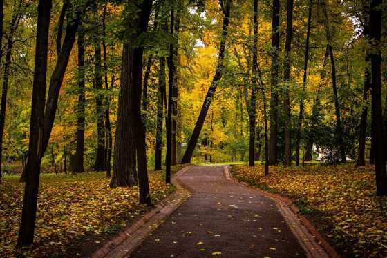
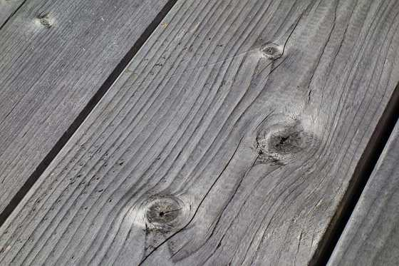
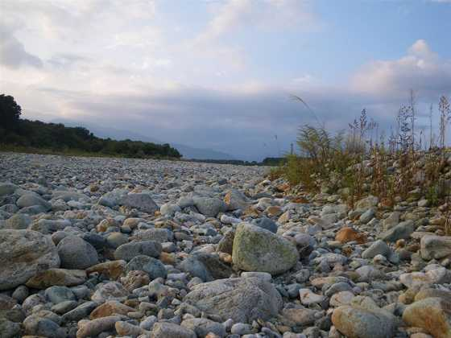
以下は制作側が作成した例で、実際のお客様の声ではありません。
器がどれも手になじんで、食べ終わるまでゆっくりできました。
お肉やお魚がなくても、野菜の味がしっかりしていて満足でした。
古い家の落ち着いた雰囲気で、窓の光が気持ちよかったです。
〒629-0311 京都府南丹市日吉町胡麻ミロク67
JR山陰本線 胡麻駅から徒歩約15分(紹介記事より)
最新の営業情報は Instagram(@aoisaru_utuwacafe) をご覧ください。